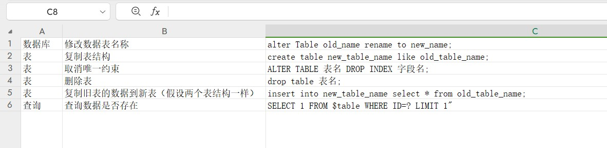
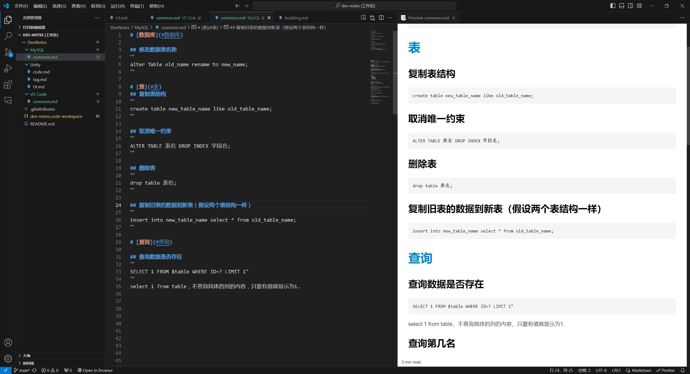

记笔记的方式推荐——Markdown
作者：幻辰
时间：2024年5月18日20:19:06
字数：2969
在阅读本文的过程中，如果你时间有限
可以随时直接跳到文章结尾，教程都放在那里了
这篇文章主要是讲的我个人对 Markdown 的碎碎念式介绍
你是否在寻找一种「轻便好用」的写笔记的方式？
我发现这个世界的信息差真的好大
有时候很多近在眼前的好东西，却从没用过
就像我今天才发现 Markdown 一样
我一直在寻找理想的记笔记软件很久了
以至于我都能明确的列举出我所需要的功能：
- 首先，我不想使用 Word文档 ，我觉得不够 轻、便
这里的 轻、便 是指两个方面的
轻：不需要安装WPS或Office这种办公软件就能直接使用
便：虽然WPS可以进行文字排版，但每次要鼠标选中文字，不够方便 - 我喜欢 看上去使用简单 的东西，而不是
WPS那种复杂的工具栏
他总是让我感觉，我在办公，做一个很费心思的复杂工程
只想写个简单的笔记，却要用WPS来做文案排版，杀鸡焉用牛刀的感觉 - 我希望文字 没有复杂的格式信息 ，像
PDF那样简洁稳定，排版不会乱
因为通常复制PDF的文字，不会包含那么多格式信息
而复制到Word里面的话，排版一般都乱了，需要重新调整 - 但我仍然需要 一些基础的文字排版功能
比如能调整文字大小，做一些简单的样式变化
粗体、斜体、删除线，等等之类的 - 我也希望能 插入图片 ，这样能用来记录图文内容
- 因为我的日常主要是写代码，所以如果 能写代码笔记 之类的，那可太实用了
就像网上经常看到的代码块那样，比如：
void Mian() { print("Hello world!); }
我一直以为这样的代码块功能，是那些编程网站才有的专属支持 - 还有其他等等预期的使用需求…
总而言之，我在找这样一款能 轻便又好用的记笔记方式 ，已经很久了
我之前尝试过的各种方案：
- Word：前面说了，工具栏太复杂了，排版格式也复杂
- PDF：这东西只是导出的成品，但可惜不能直接编辑
- TXT：非常理想般的简洁和轻量，但功能有些太简陋
- XMind：思维导图虽然简洁好用，但无法用来记录文字多的内容
- Excel：表格只适合记录具有明确结构的内容
- 飞书文档：比Word简洁好用很多，但属于要注册账号的平台
- HTML：自己写网页博客那种，肯定能自定义到满意，但前期工作量太大了
只能说，受限于信息差，以及时间精力有限，一直没主动去接触其他东西
而我的直觉通常很准，心里的声音告诉我，诶，应该会有这样一个软件吧
但我就是一直没找到这样的东西，我四处留意并等待了很久
我时常在想，难道要等以后我亲自来开发这样的 简洁、轻便、好用 的笔记软件？
不会吧，不会吧，这种好事轮得到我来做？
如果真有这样一款软件，按理早应该出来了，并流行在大众之中了
只是，我一直不知道它具体是什么……
直到昨天，或者直到我最近到了一个新的阶段
我又回到了起点，路过新手村的时候，发现了一些曾经被忽略的东西
Markdown这个东西，就静静的站在那里
像极了你玩游戏时，当面路过，被你忽略的，但其实非常有用的NPC
对，就是这样的感觉，一模一样
当你玩游戏时，一直觉得某个功能不方便，在苦苦寻找解决方案
也许只是因为你忘记了，曾经无意间跳过了哪一句NPC对话
才导致了这么多年被闷在鼓里的信息差
所以不废话，直入本次正题，关于使用 Markdown 来写笔记的介绍
一、什么是 Markdown?
Markdown 是一种轻量级的文本标记语言
它可以在纯文本中，很方便的添加格式化标签
有点像 HTML 的文本标签，但它的语法非常简单好用
它能通过在文字前后简单的添加符号，来快速设置文字的格式
就像下面这样：
设置粗体：**粗体文字**
设置斜体：*斜体文字*
然后这些文字在你看到的时候，就会自动变成下面这样：
设置粗体：粗体文字
设置斜体：斜体文字
怎么样，这个格式足够简单吧
然后你现在看到的这篇文章，各种排版也都是用 Markdown 的符号进行排版的
只需要在文字前后，加上对应的符号，就能直接有效的完成文字排版
是不是挺方便，觉得有点意思，那么接着往下看
二、为什么使用 Markdown？
- 因为足够简便。 不需要打开 Word 类软件来编辑内容
- 因为无处不在。 如今已经非常多的网站都早已支持 Markdown 的功能
例如：Github 上最常见的README.md介绍文件，其实这正是用 Markdown 写的
还有绝大部分的编程网站，你看到那些代码块，从里面复制别人的代码
那并不是网站内置了文档编辑器，而只是支持了 Markdown 功能 - 因为是纯文本的。 你用 Markdown 写的内容，都是纯文字内容
而不是像 Word 文档那种，复制到其他地方，排版会乱，字号大小不一样等等 - 因为是独立的。 这意味着，你不需要到专门的文档编辑软件去写内容
你只要记住简单的语法，那么即便你在手机聊天框里写出来的内容排版，也是准确的预期效果
也同样不用为 WPS 那些软件更新频繁、可能推广告、买会员，而感到厌烦 - 因为它面向未来。 你不用担心几十年后，你写了很多年的心血都是在那些 Word 文件里
而几十年后，谁知道那些公司是否倒闭，他们的软件是否还存在
Markdown 是纯文本编辑，你可以无限期的保存你所书写的内容，这很重要，也令人放心
三、Markdown 的工作原理
也许你在思考，Markdown 是如何工作的呢？
为什么我们能在不同的设备上，看到一致的排版，而不会乱掉
简单来说，它的过程是这样的：
- 你用任何文本编辑器，写了一段包含 Markdown 语法的文字内容
- 你需要将其保存为后缀
.md格式的文件，就像记事本是.txt一样 - 然后那些支持 Markdown 语法的地方，会识别你写的内容，并自动转化为
HTML文件 - 所以你写 Markdown 的本质，就像在写简化版的网页排版一样
- 然后你写的内容和排版格式，会像网页一样渲染排版好，呈现在你的设备中了
当然，这只是一个简单的过程介绍，实际上有更多玩法
当你写好的 .md 文件，可以通过各种应用程序，按需要转化成不同的结果
可以转成 .html 网页文件，或者转成 .pdf PDF文档，以及转成 .doc Word 文档也是可以的
所以 Markdown 的扩展性、灵活性非常高，并且还很坚实可靠
四、Markdown 能做什么？
- 网站
Markdown 本身就是为 web 而设计的，所以在各种网站上最常见
也经常用来搭建一些静态网站之类的
你现在看到的这个网站，就是我用 Markdown 自动生成的 - 书籍
你可以用 Markdown 来替代 Word 软件写一些书籍
Markdown 虽然不像 Word 软件，有那么丰富的排版功能
但对于大部分时候的基础排版，已经足够了
并且可以轻松的导出 PDF 或者 HTML 格式，发送或上传到其他地方 - 笔记
使用 Markdown 来写一些笔记、图文教程也非常好用
几乎各种方面，Markdown 都是非常理想的记笔记的方式
它能满足绝大部分时候的功能需求，就像我这篇文章也是在记笔记 - 文档
Markdown 也非常适合技术文档
像 Gitbub 等越来越多的公司都转向使用 Markdown 来创建文档
你看左边的导航栏，是不是在很多网站都见过这种导航栏 - 其他
你还可以使用 Markdown 来写邮件，甚至还能用来写 PPT 等等
以及其他你觉得可以用到的地方
五、Markdown 的个人经验分享
以上都是转述一些官方文档上的介绍
这里便轮到我个人的分享环节了
我真的热衷的向各位分享，使用 Markdown 对我的工作流的影响和改变
为什么说 Markdown 实在相见恨晚
以及
为什么 VS Code 是神
我真的有太多一堆的笔记经常要记，但手里没趁手的工具
我甚至用 Excel 来记代码笔记，是的，没错，用的 Excel ！
就像这样：

而用了 Markdown 之后，现在是这样：

这……还用我多说嘛？
wc，我是多么的 相见恨晚 啊！😫
这么晚才遇到，我之前多少的代码笔记要重新写成 Markdown 版本啊！
（一把无言泪，你怎么才来啊……😭）
以及搭配上 VS Code，还可以直接上传到 Gitbub 来对笔记进行 版本管理
这样不是才更像一个程序员该有的样子嘛
这样一来，我平时还可以写一些图文日志来分享了
能够像现在这样，直接发布到网页上，给大伙们浏览起来更加方便
我一直都是想写点技术博客分享的，但又不想去 CSDN，也不想去 B站专栏
也没时间去折腾 个人网站 和 博客模版
而如今，我终于遇到一个渴望已久的方式，来更为轻便的记录我想写的内容了
还好遇到了，只要现在遇到了，就还不算太晚
也正是因为出于这样的相见恨晚的心情
我转头一想，我天天上网泡在电脑前，都是困在自己的信息茧房里
那还有很多同志们、家人们，也可能还不知道这东西
写，我必须得给大家立即写一篇 Markdown 的分享日志，介绍给大家！
所以就有了你现在正在看到的这篇文章
我昨天晚上才刚接触这个，这东西是真容易上手，开箱即用
都不用怎么学就写好了现在的这个排版，现学现用
以及顺便学习了一下，使用 Markdown 自动生成了现在这个网站
好耶！以后有地方写日志了😆
话不多说了，也许你已经对 Markdown 产生兴趣了，想要来学习一下了
上教程链接！
六、Markdown 即刻入门！
- Markdown 官方教程 ：https://markdown.com.cn/
- B站相关教程：https://search.bilibili.com/all?keyword=Markdown
- VS Code 的 Markdown 插件推荐 ：
（直接在 VS Code 应用商店里搜索Markdown就有一堆相关插件）
Markdown All in One：这个类似全家桶工具合一的感觉，很多功能，基本上必装
Markdown Preview Github Styling：这个是 Github 上面的 Markdown 风格
（各种不同地方对 Markdown 的渲染排版风格会略有区别）
如果你的目标是上传到 Github 上，用这个预览排版效果会更一致一些
Markdown PDF：用来导出 PDF 文件的
主要就介绍这三个插件吧，其他的大家可以自行看看和试用安装
感谢阅读，希望这篇文章对你有帮助😋